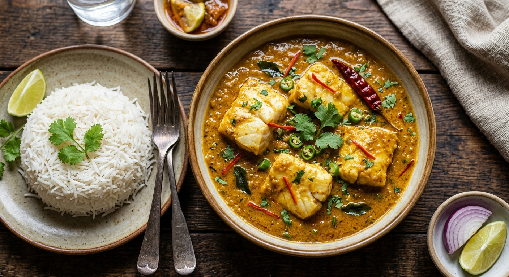

Home
Fish Curry

This Indian fish curry is a very spicy dish. The recipe was inspired by a Bengali fish recipe
Mustard-marinated white fish mix with warm spices and bold sauce to create a Bengali-style curry.
Reviewers applaud cashew and mustard for their depth and flavor, not typical in most fish curries.
Ingridients
- 3 tablespoons canola oil, divided
- 2 teaspoons Dijon mustard
- 1 teaspoon ground black pepper
- 1 ½ teaspoons salt, divided
- 4 white fish fillets
- 1 medium onion, coarsely chopped
Cooking Steps
Gather all ingredients. Preheat the oven to 350 degrees F (175 degrees
C)
-
Bring a large pot of lightly salted water to a boil. Cook lasagna
noodles in boiling water, stirring occasionally, until tender yet firm
to the bite, about 8 minutes. Drain, rinse with cold water, and set
aside.
-
Meanwhile, place chicken in a large saucepan with enough water to cover;
bring to a boil. Cook until chicken is no longer pink and the juices run
clear, about 20 minutes. Remove chicken from the saucepan and shred
-
Combine shredded chicken, 1 cup mozzarella cheese, and cream cheese in a
large bowl. Dissolve hot water and bouillon in a liquid measure; pour
over chicken mixture and stir until well combined
-
Spread 1/3 of the spaghetti sauce in the bottom of a 9x13-inch baking
dish. Cover with 1/2 of the chicken mixture and top with 3 lasagna
noodles; repeat. Top with remaining sauce and sprinkle with remaining 1
cup mozzarella cheese.
- Bake in the preheated oven for 45 minutes
- Serve and enjoy!